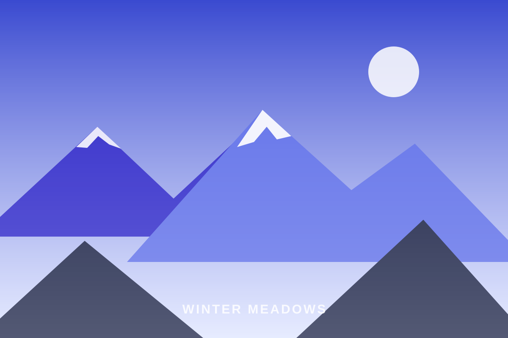
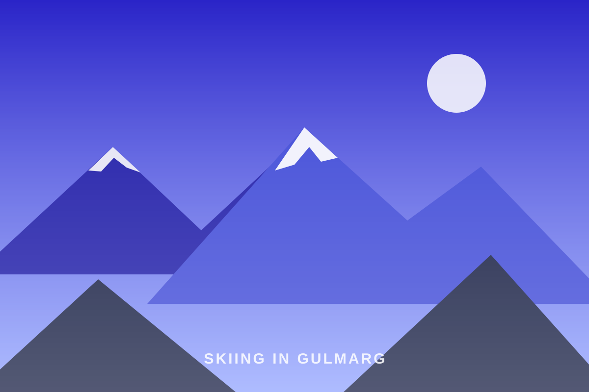

Skiing Courses
Beginner to off-piste programmes on Apharwat's legendary snow.
Explore
Gulmarg Ski Club is a family of local instructors, guides and hosts who turned a lifelong love of the Pir Panjal into India's premier mountain adventure company.

Our Story
In the winter of 2011, a small group of Gulmarg locals — lift operators' sons, shepherds' grandsons, kids who learned to slide on wooden planks — pooled their savings into a handful of rental skis and a promise: teach this mountain properly, or not at all.
Fourteen seasons later that promise has grown into a full ski school, a trekking outfit and a luxury travel studio. What hasn't changed is who we are: locals first, guides second, and hosts always. When you travel with us, you're not buying a package — you're being welcomed into a valley.
0
Founded in Gulmarg
0
Instructors & Guides
0+
Guests Hosted
0
Serious Incidents. Ever.
What We Stand For
Conservative calls, daily snowpack and weather reviews, radio-linked teams and rehearsed evacuation plans on every route.
Carry-in, carry-out expeditions, local employment on every trip, and one percent of revenue into valley clean-up drives.
More than half of each winter's learners are returning guests or their friends. That's the only marketing metric we track.

The Team
Our 26 instructors and guides average eleven seasons of experience each. Between them: national ski-instructor certifications, avalanche safety training, wilderness first-aid, high-altitude expedition leadership — and an unbeatable knowledge of where the snow is softest at 9 a.m.
Meet Us in GulmargGood to Know
We are a locally owned company founded in 2011 by Gulmarg-born instructors and mountain guides. Every trip is led by people who grew up on these slopes and valleys.
Yes. Our ski and snowboard instructors hold national instructor certifications along with avalanche-awareness and wilderness first-aid training, refreshed every season.
We do. Winters are for skiing and snowboarding; from May to October we run treks, offbeat valley tours and Ladakh expeditions.
Absolutely. We regularly host university groups, corporate offsites and film crews, with custom logistics, safety briefings and dedicated coordinators.
One conversation with our team and you'll understand — this isn't tourism, it's homecoming.